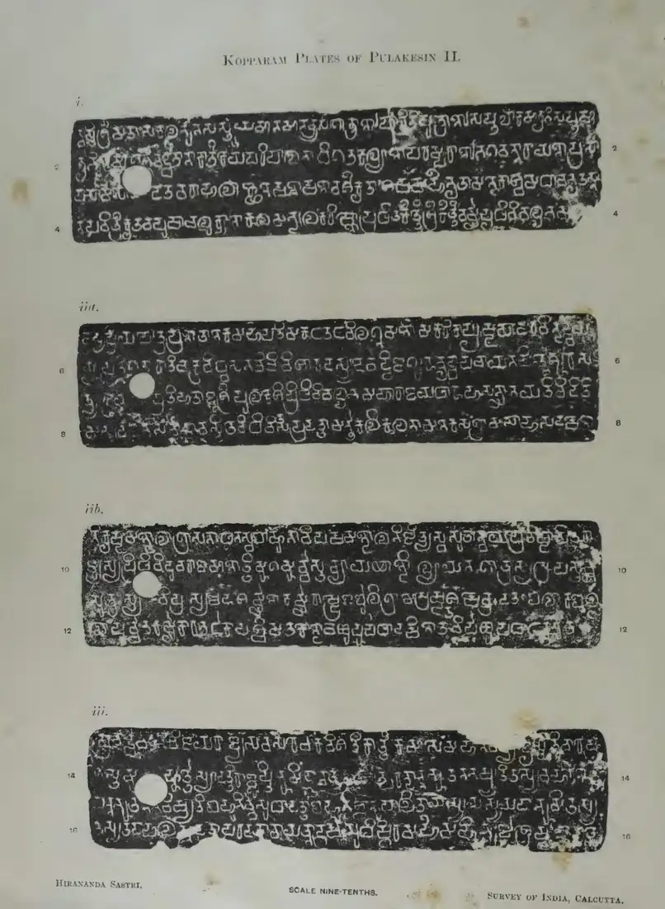

No. 27.—KOPPARAM PLATES OF PULAKESIN II.
BY E. HULTZSCH, PH.D.; HALLE (SAALE).
Ink-impressions of these copper-plates were sent to me by Rao Bahadur Krishna Sastri, who had received them from the late Mr. K. V. Lakshmana Rao, M.A., Telugu Encyclopædia Office, Egmore, Madras. The plates had been found near Kopparam in the Narasaraopet Tāluk of the Guṇṭūr District. For a description of them, and for remarks on their alphabet and language, see Mr. Lakshmana Rao's valuable article in the Annals of the Bhandarkar Institute, Vol. IV, p. 43 ff.3 I now re-edit the inscription because I believe that I am able to improve a few of his readings and renderings.4 The composer of the text knew so little Sanskrit that in some places it is difficult to divine what he really wanted to express.
The inscription records a grant made by the Mahārāja Satyāśraya Pulakēśi-Pṛithivi-vallabha5 (line 6 f.), the "dear grandson" (l. 5) of the Mahārāja Kīrtivarma-Pṛithivivallabha of the Chalukya family (l. 4). As stated by Mr. Lakshmana Rao (loc. cit., p. 43), priyapautra must be a stupid error for priya-putra, "the dear son." For we know from trustworthy documents that Pulakēśin II was not the grandson, but the son of Kīrtivarman I.
The donee was a Brāhmaṇa of the Śāṇḍilyāyana-gōtra and the Āpastamba-sūtra, who resided at Mūgamūr (l. 10). The grant consisted of a field of eight hundred (nivartanas of land) in the village of Irbuli in (the district of) Karma-rāshṭra (l. 11). The field lay to the south of
1 For the expression bhūmi-chchhidra-nyāyēna, see Ind. Ant., 1922, pp. 77-9.
2 Siddhi= "decision, adjudication, determination (of a lawsuit)"—Monier-Williams' Sanskrit-English Dictionary.
3 See also Madras Epigraphical Report, for 1923, App. A, No. 14.
4 In this compound the shortening of the final ī of pṛithivī is permitted by Pāṇini, VI, 3, 63; cf. compounds like Hāriti-putra (line 1 of this inscription), Kālidāsa, etc.
Kondav[e]řupūr and to the north of Virpařu (l. 12). For Karma-rāshtra, see above, Vol. XV, p. 250. Mr. Lakshmana Rao (loc. cit., p. 49) identifies Kondav[e]řupūr with Konđaviđu, and Virpařu with Vipparla, both in the Narasaraopet Tāluk of the Guņtūr District, and Mūgamūr with Mūngamūr in the Kandukūr Tāluk of the Nellore District.
In line 10 we are introduced to a great warrior named Přithividuvarāja whom Mr. Lakshmana Rao (loc. cit., p. 46 f.) identifies with Satyāśraya Dhruvarāja Indravarman of the Goa plates of Šaka 532.1 I venture to propose another identification. If we connect the participle su[m*]pradattā (l. 8) with ājñaptih (l. 14) and with its Prākrit form āṇatti2 (l. 10), we are driven to consider the words -rājyasya Prīthividuvarājam=āṇatti (l. 9 f.) a mistake—which would not be without parallels in this incorrect text—for -rājyasya Prīthividuvarājasy=ājñaptih. Now, duvarāja is a Draviđian tadbhava of yuvarāja.3 If we contrast the title Prīthiviyuvarāja, “the heir-apparent of the earth,” with Prīthivivallabha, “the husband of the earth,” which was the title of Kīrtivarman I and Pulakēśin II; and as it is stated in line 9 f. that Prīthiviyuvarāja had “secured the kingdom to the lineage of his son,” it seems that Prīthiviyuvarāja can be safely identified with Vishṇuvardhana I, the younger brother of Pulakēśin II and the founder of the Eastern Chalukya dynasty. It follows further that Vishṇuvardhana I continued to be dependent on Pulakēśin II in the twenty-first year of the latter’s reign (text line 13). From the Sātāra plates we already knew that he held the office of Yuvarāja in the eighth year (of Pulakēśin II).4 In a grant of A.D. 632, which was the 18th year of his own reign,5 and in the Timmapuram plates,6 Vishṇuvardhana I already bears the title of Mahārāja.
The words Vallabha-sama[ksh]-āvastitē (l. 8) may have to be corrected into Vallabhē samaksh-āvasthitē, “Vallabha (i.e. Pulakēśin II) being present in person.” The mysterious words marnta Kali-kulanām . . . sva-bāhunā (l. 8 f.) may be compared with Kaliyuga-khala-nīrmathanai[h*] . . . charītaih in the Sātāra plates of Vishṇuvardhana I,7 and may be corrected accordingly into mathā Kali-khalānām . . . sva-bāhunā, “by his arm. . . (which was) a churning-stick of the wicked (people) of the Kali (age).” The compound at the beginning of line 9, which Mr. Lakshmana Rao (loc. cit., p. 53) refers to Prīthiviyuvarāja himself, has to be connected likewise with sva-bāhunā, and has to be corrected into nishkrishta-maṇđalāgra-sanāthēna, “wielding the drawn sword.”
Line 13 contains the date of the grant: the year twenty-one of the reign (of Pulakēśin II), the month of Kārttika, the great ninth (tithi), a Thursday. For authoritative remarks on this date I refer the reader to the Postscript on pages 260-61 below, which has been kindly contributed by Mr. R. Sewell.
TEXT.8
First Plate.
1 Svasti [||*] Šrīmatām sakala-bhu[va*]na-samīstūyamāna9-Mānavya-sagōtrāṇā[m*] Hārītiputrāṇā[m*] sapta-lōka-mātrībhi[h*] Sapta-Mā-
1 J. Bo. Br. R. A. S., Vol. X, p. 365 f.
2 See e.g. above, Vol. VIII, p. 146, note 8, and Vol. XVIII, p. 7.
3 See above, Vol. IV, p. 180, note 5.
4 Ind. Ant., Vol. XIX, p. 304.
5 Ind. Ant., Vol. XX, p. 16,
6 Above, Vol. IX, p. 317.
7 Ind. Ant., Vol. XIX, p. 309, text line 5 f.
8 From ink-impressions supplied by Rao Bahadur H. Krishna Šaštij, B.A.
9 The ā of stū is corrected by the engraver from u.
Plate 1 is bound after this page.
2 tribhi[h*] [sa]myag=abhivarddhitānā[m*] Kārtikēya-paripālan-ādhigata-kalyāṇa-paramparāṇā[m*] bhagavan-Nārāyaṇa-prasā.
3 da-sā(sa)māsāda(di)ta-varāha-lāñchhan-ēkshaṇa-kshaṇa-vaśikrīt-āsēsha - mahībhrītām=anēk-āśvamēdh-āvabhrīta(tha)-snā.
4 na-pavitrikrīta-vapushā[m*] Chalukyānā[m*] kulam=abhyalamkarishṇō[h*] prathita-kīrttē[h*]¹ śrī-Kīrttivarmma-Prīthivivallabha-ma[hārā-]
Second Plate ; First Side.
5 jasya priya-pau(pu)tra[h*] praṇat-ānēka-mahīpati-makuṭa-taṭa-vilagna-maṇi-makarikā-ghrīshṭa-pād-āravinda-dvaya-
6 sya pratigat-ārāti-chakra-vidhva[m*]sana-vivi(dhi)-viśāradasya dēva-dvija-guru-vṛiddh-āpachāya(yi)na[h*] pit=aiva² śūra[h*] Sa-
7 tyāśraya=pratihat-ājña[h*]³ śrī-Pulakēśi-Pri(Prī)thivivallabha-mahārāja(jō) yathāruha⁴ sanmā(mmā)nayati [||*] Viditi(ta)-
8 m=astu Vallabha(bhē) sama[ksh]-āvasti(sthi)tē vidhivi(va)t=sa[m*]pradattā marnta⁵ Kali-kulanām=⁶anēka-samgrāma-sāhasa-dakshēṇa
Second Plate ; Second Side.
9 nikrī(shkrī)shṭa-maṇḍalāgrā(gra)-sanāthēna sva-bāhunā vipaksha-maṇḍala[m*] nirjitya sva-sut-ānvayē pratishṭā(shṭthā)pita-rā-
10 jyasya Pri(Prī)thividu(yu)varājam=ānatti? [||*] Mūgamūr-vv[ā*]stavyā[ya]s Chhā(Śā)ṇḍilyāyana-gōtrasya Āpasta[mba]-
11 sūtrasya viprasya ⁹Vēdaśarmmaṇa[h*] Karmma-rāshtrē Irbuli-grāmē ashṭa-śatam¹⁰ kshētram⁹ datam(ttam) Balāka-ba(pa)lva-
12 lā[t*] pūrvvata[h*] Karmmakāra-taṭākā[t*] paśchimata[h*] Koṇḍav[e]¹¹ṛupū[r]-pathā[d*] dakshiṇata[h*] Virpaṛu-pathā¹² uttarata[h*]
Third Plate.
13 pravarddhamāna-vijaya-rājya-sa[rī*]vatsarē ēkavi[rī*]śati¹³ Kārttika-māsē mah[ā-navamyārī]¹⁴ Brī[ha*]spati-vārē pra-
14 śastē muhūrttē=syā datti(ttē)r=ājñapti[h||*] Bhūmi-dānāt¹⁵ tpa(pa)ran=dā[na*]n=na bhūta[rī*] na bha[vi*]shyati [||*] tasy=aiva haraṇ[āt=pā]-
15 pan=na bhūta[rī*] na bhavishyati [||1*] Bahubhir=vvasudhā dattā bahubhiś=ch-ānupālitā [||*] yasya-yasya yadā bhūmi[s*]tasya-
¹ An ī is also affixed to the tt of ttē.
² Read pit=ēva. The va is entered below the line.
² Read Satyāśrayō=pratihat-ājñaħ.
⁴ Read yathārham.
⁵ Read mathā.
⁶ Read Kali-khalānām.
⁷ Read rājasy=ājñaptiħ.
⁸ Either read -vvāstavyasya, or replace the four genitives following it by datives.
⁹ [The name seems to be Aiļa. The symbol for ē in l. 13 below would suggest that the first letter is ai and the second letter seems to be ļa.—Ed.]
¹⁰ The ta of -satam is entered below the line. Two crosses (kākapada) above the line mark the place where it has to be inserted. Mr. Lakshmana Rao (loc. cit., p. 44 f.) mistook them for numerical symbols. [The original seems to read sata.—Ed.]
¹¹ [The letter looks more like che.—Ed.]
¹² Read -pathād=uttarataħ.
¹³ Read ēkavīm̄sē.
¹⁴ The tops of the bracketed letters are broken away, but the reading is certain.
¹⁵ There is a vacant space after this word.
Dr. Leitner to take away anything he might have left at Hoti Mardān. Dr. Leitner, after personal inspection, got the stone carried down to Lahore by bullock-cart, and there got the inscription both lithographed and photographed. The discovery of the stone therefore belongs to Dr. Bellew, that of the inscription to Dr. Leitner.”
A rubbing of the inscription was forwarded by Dr. Leitner to Professor Dowson, who gave a notice of it in Trübner's Record of June 1871. A second notice was published by Cunningham in the same Record, June 1873,1 and a fuller account, with an excellent plate by Dowson,2 who read the date portion and, in a second note,3 gave a new reproduction of the same. Then follow editions by Cunningham,4 Senart5 and Boyer.6 I now edit the epigraph from excellent estampages which I owe to the kindness of Professor Vogel, who had them prepared for me when he was Superintendent of the Punjāb Circle of the Archæological Survey.
The inscription consists of six lines, and the average height of the letters is 1 1/4”. In the first line there is an apparent gap after the seventh letter, but nothing has been omitted, the intervening space having been purposely left without any writing on account of the roughness of the stone. Similarly there is a vacant space in the middle of 1. 5.
Cunningham remarks that “as the stone has been used for many years, perhaps for centuries, for the grinding of spices, all the middle part of the inscription has suffered and become indistinct, and some portions have been obliterated altogether.” In such circumstances it is intelligible that the reading and interpretation is in some places beset with considerable difficulties.
The alphabet is Kharōshthi of the Śaka variety. The letter ya has the relatively broad angle which we also find in the Pāja inscription of Sam 111, and the Mount Banj inscription of Sam 102. The continuation of the vertical of sa up towards the upper curvature, which is seen in both those records, is apparently not met with. We find the same occasional lengthening of the right top of ma as in Mount Banj. Ba has the older curvilinear and not the later angular shape. The curvature of the upper end of da towards the right is very insignificant. There is no dental na, and the cerebral ṇa has the rounded top which we find in the Mount Banj and Kaldarra epigraphs and also in the Patika plate. The shape of individual letters is not, however, quite consistent, and more especially the letter ya has several somewhat different forms, so that it is not quite certain whether it should not, in puyae ll. 5 and 6, be read as puae. Note also the curious flourish after the last letter of the inscription, which is certainly e. It is perhaps due to damage to the stone during the years when it was used for grinding spices.
With regard to individual letters we may note the akshara following after the break in 1. 1, which I follow Professor Franke7 and M. Boyer in transliterating f. M. Senart8 transcribed it as bh and Professor Lüders9 as vh. I use f because this writing has the advantage of greater simplicity, and because the Latin form of the name in which the letter occurs has familiarized us with the f. But it is not my intention to convey the impression that the actual sound was necessarily the voiceless spirant f. Gudufara, the name in question, is not Indian but Persian, derived from an old Viṣdafarna “the winner of glory”. The last part of the compound is derived from the Aryan base svar, and sv is usually represented by uv in Ancient
1 Reprinted Ind. Ant., Vol. II, 1873, p. 242.
2 J. R. A. S., New Series, Vol. VII, 1875, pp. 376 ff., with plate.
3 Ibid., Vol. IX, 1877, pp. 144 ff.
4 Archæological Survey of India, Vol. V, 1875, pp. 58 ff., with plate XVI, No. 3.
5 Journ. Asiat., VIII, xv, 1890, pp. 114 ff., with plate.
6 Ibid., X, iii, 1904, pp. 457 ff.
7 Pāli und Sānekrit. Strassburg, 1902, p. 111.
8 Journ. Asiat., IX, xii, 1893, p. 206.
9 J. R. A. S., 1909, pp. 655 ff.
